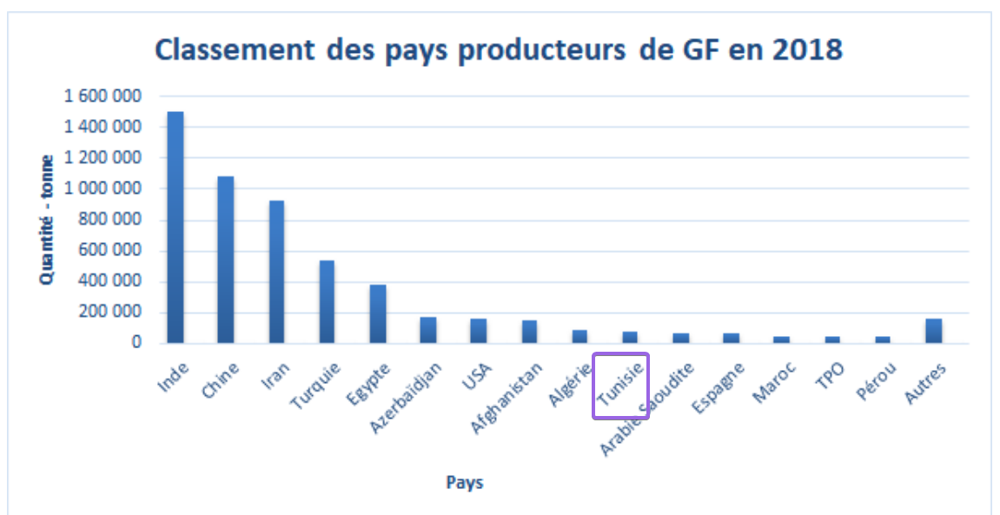

Les données officielles disponibles nous donnent ce classement pour les pays producteurs de GF
(Grenade Frais).
Cependant être un grand producteur ne signifie pas être exportateur de ce produit1
Remarque: cliquer sur l'image pour l'agrandir
Statistiques
Analyse des exportations
Il existerait des pays qui n'apparaissent pas dans la liste plus haute des pays producteurs de GF mais qui peuvent être d'éventuels grands exportateurs. Il serait donc utile de pousser les recherches à travers l’étude des statistiques du commerce mondiale en matière de GF
